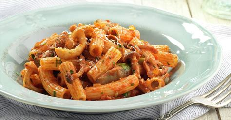

Macarrones
Home

Descripción
Un buen plato de macarrones gratinados con tomate y atún.
Ingredientes
- Pasta de macarrón
- Queso Rallado
- Lata de Atún
- tomate Frito
- Oregano
Pasos
- Agregar agua a un cazo y dejar hervir.
- Una vez este hiviendo el agua, hechar sal y aceite.
- Añadir los macarrones y remover para que no se peguen hasta que esten aldentes.
- Sacar los macarrones del agua con ayuda de un colador.
- Añadir tomate y atún y remover todo, una vez hecho, añadir por encima una capa de queso rallado y meter al horno a 180º.
- Sacar del horno una vez el queso quede totalmente fundido y servir.